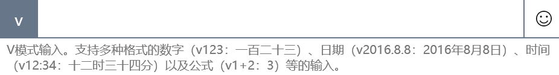

Windows 10 中文输入法特殊字符输入
自从升级到 Windows 10 后一直在使用自带的中文输入法，主要还是考虑到安全和响应速度。在需要输入一些特殊字符的时候，其使用帮助没有太详细的指南，所以在查阅相关资料后，总结一下。
激活 U 和 V 模式
U 和 V 模式是用来输入中文相关特殊符号及内容的快捷键，当激活后就可以通过输入 V 或 U 键快速调用相关功能。
进入微软拼音设置项，在 advanced 栏内打开对应选项：
打开后将输入法切换到微软拼音中文状态，开始输入快捷键测试。
U 模式

- 笔画：通过 h / p / s / n / z 按笔画搭建想要输入的文字，在不知道拼音的情况下有用
- 拆分：通过输入文字的基本组成部分的拼音来输入最终文字，如：uererer -> 聶
- 混合输入，可以将以上两种模式混合输入
- 符号输入：特殊字符的输入，包括中文标点，数学标点等，通过提示快捷键进入选择，如：uubd -> 「引号」
V 模式

主要将数字/日期/时间转换成中文模式。
- 数字：将阿拉伯数字转换为中文，如：v123 -> 一百二十三
- 日期：将数字日期转换为中文样式，如：2016.01.10 -> 二〇一六年一月十日
- 时间：输入数字时间转换，如：12：20 -> 十二时二十分
此外，还可以通过快捷键 CTRL + shift + B 输入 emoji 或颜文字，CTRL + shift + F 切换简体字/繁体字输入。